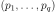
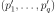
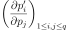

GumbelAB¶
-
class
GumbelAB(*args)¶ Gumbel distribution parameters.
- Available constructors:
- GumbelAB(a=0.0, b=1.0)
Parameters: - a : float
Location parameter.
- b : float
Scale parameter .
See also
Notes
The native parameters are defined as follows:
Examples
Create the parameters of the Gumbel distribution:
>>> import openturns as ot >>> parameters = ot.GumbelAB(-0.5, 0.5)
Convert parameters into the native parameters:
>>> print(parameters.evaluate()) [2,-0.5]
The gradient of the transformation of the native parameters into the new parameters:
>>> print(parameters.gradient()) [[ 0 1 ] [ -4 0 ]]
Methods
evaluate()Compute native parameters values. getClassName()Accessor to the object’s name. getDescription()Get the description of the parameters. getDistribution()Build a distribution based on a set of native parameters. getId()Accessor to the object’s id. getName()Accessor to the object’s name. getShadowedId()Accessor to the object’s shadowed id. getValues()Accessor to the parameters values. getVisibility()Accessor to the object’s visibility state. gradient()Get the gradient. hasName()Test if the object is named. hasVisibleName()Test if the object has a distinguishable name. inverse(inP)Convert to native parameters. setName(name)Accessor to the object’s name. setShadowedId(id)Accessor to the object’s shadowed id. setValues(values)Accessor to the parameters values. setVisibility(visible)Accessor to the object’s visibility state. __call__ -
__init__(*args)¶ Initialize self. See help(type(self)) for accurate signature.
-
getClassName()¶ Accessor to the object’s name.
Returns: - class_name : str
The object class name (object.__class__.__name__).
-
getDescription()¶ Get the description of the parameters.
Returns: - collection :
Description List of parameters names.
- collection :
-
getDistribution()¶ Build a distribution based on a set of native parameters.
Returns: - distribution :
Distribution Distribution built with the native parameters.
- distribution :
-
getId()¶ Accessor to the object’s id.
Returns: - id : int
Internal unique identifier.
-
getName()¶ Accessor to the object’s name.
Returns: - name : str
The name of the object.
-
getShadowedId()¶ Accessor to the object’s shadowed id.
Returns: - id : int
Internal unique identifier.
-
getVisibility()¶ Accessor to the object’s visibility state.
Returns: - visible : bool
Visibility flag.
-
gradient()¶ Get the gradient.
Returns: - gradient :
Matrix The gradient of the transformation of the native parameters into the new parameters.
Notes
If we note  the native parameters and  the new ones, then the gradient matrix is .
- gradient :
-
hasName()¶ Test if the object is named.
Returns: - hasName : bool
True if the name is not empty.
-
hasVisibleName()¶ Test if the object has a distinguishable name.
Returns: - hasVisibleName : bool
True if the name is not empty and not the default one.
-
inverse(inP)¶ Convert to native parameters.
Parameters: - inP : sequence of float
The non-native parameters.
Returns: - outP :
Point The native parameters.
-
setName(name)¶ Accessor to the object’s name.
Parameters: - name : str
The name of the object.
-
setShadowedId(id)¶ Accessor to the object’s shadowed id.
Parameters: - id : int
Internal unique identifier.
-
setValues(values)¶ Accessor to the parameters values.
Parameters: - values : sequence of float
List of parameters values.
-
setVisibility(visible)¶ Accessor to the object’s visibility state.
Parameters: - visible : bool
Visibility flag.